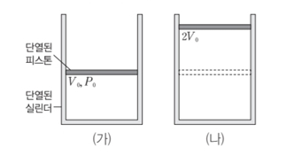

문제:
7. 그림 (가)는 단열된 실린더에 일정량의 이상 기체가 들어 있는 것을 나타낸 것이다. 이상 기체의 부피는 V0 이고 압력은 P0 이다. 그림 (나)는 (가)의 상태에서 이상 기체의 부피가 2V0 가 되도록 단열 팽창을 시킨 것이다.
이에 대한 설명으로 옳은 것만을 <보기>에서 있는 대로 고르시오.
ㄱ. (나)에서 이상 기체의 압력은 0.5P0 이다.
ㄴ. (가)->(나) 과정에서 이상 기체는 외부에 일을 한다.
ㄷ. 이상 기체의 내부 에너지는 (가)에서가 (나)에서보다 크다.